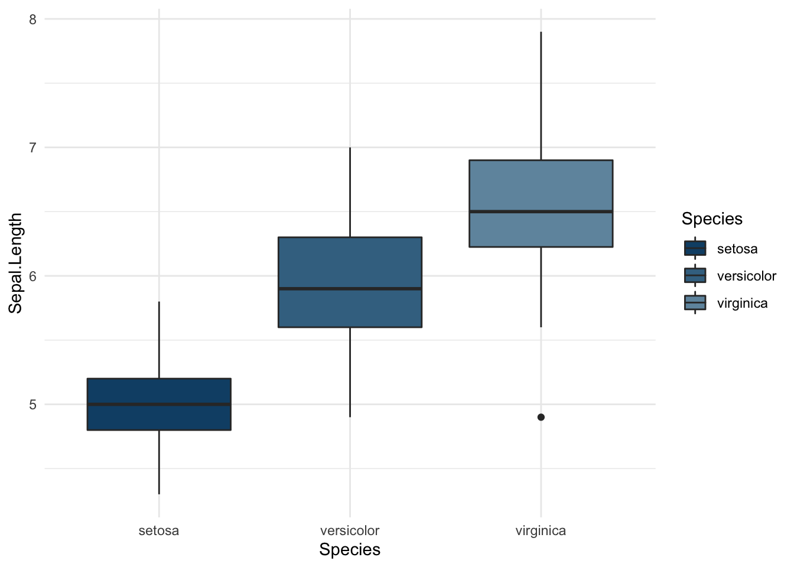
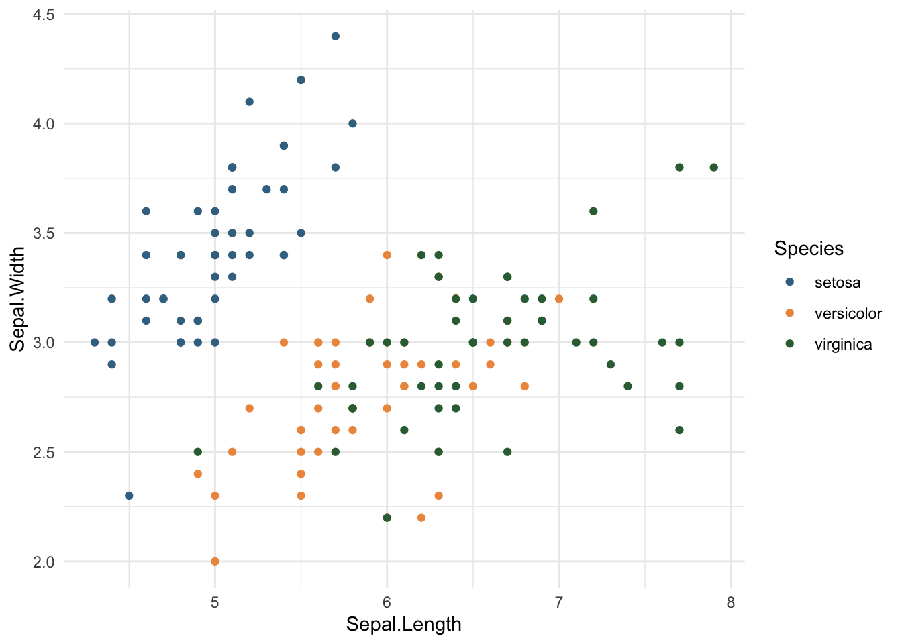

The underlying DfE colour palette can be accessed at usefulR::colour_palette. It contains 6 colours (blue, red, orange, yellow, green and purple) in 5 different hues. The function dfe_colours() provides a simple way to create various colour schemes from the palette.
A scheme which contains one colour in 5 different hues can be created by just using the colour argument.
# Box plot
bp <- ggplot(iris, aes(Species, Sepal.Length)) +
geom_boxplot(aes(fill = Species)) +
theme_minimal()
bp + ggplot2::scale_fill_manual(values = usefulR::dfe_colours("blue"))
# Scatter plot
sp <- ggplot(iris, aes(Sepal.Length, Sepal.Width)) +
geom_point(aes(color = Species)) +
theme_minimal()
sp + ggplot2::scale_colour_manual(values = usefulR::dfe_colours(c("blue", "orange", "green"), intensity = 80))